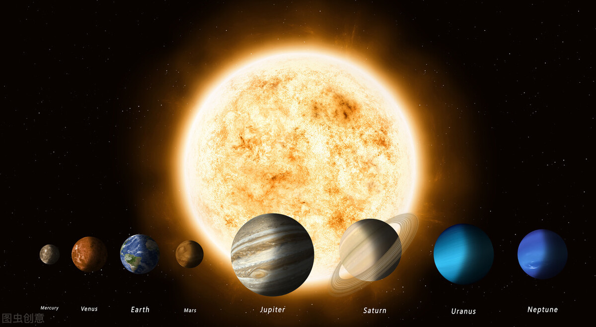

<!DOCTYPE html>
<html lang="en">
<head>
    <meta charset="UTF-8">
    <meta name="viewport" content="width=device-width, initial-scale=1.0">
    <link rel="stylesheet" href="style.css">
    <title>Sistema Solar</title>
</head>
<head>
    <body background ="">
    <map name="Sistema">

        <area shape="circle" coords="604,303,129" href="https://www.infopedia.pt/artigos/$sol" alt="Sol" title= "Sol é uma estrela anã da classe espetral G2, na qual a luminosidade, massa, volume, temperatura, composição química, etc., caracterizam uma estrela média." target= "_blank">
        <area shape="circle" coords="742,509,103" href="https://jornaldaparaiba.com.br/meio-ambiente/saturno-confira-10-fatos-sobre-o-planeta-dos-aneis/" alt="Saturno" title="Saturno é um dos cinco planetas que podem ser vistos a olho nu." target="_blank">
        <area shape="circle" coords="258,504,72" href="https://planeta-terra.info" alt="Terra" title="O planeta Terra é um sistema formado por milhões de organismo vivos, que possui um detalhado processo para a manutenção da vida." target="_blank">
        <area shape="circle" coords="1090,506,123" href="https://www.megacurioso.com.br/ciencia/55533-conheca-alguns-fatos-e-curiosidades-sobre-o-planeta-netuno.htm" alt="Netuno" title="Netuno foi descoberto em 23 de setembro de 1846, mas foi encontrado por uma previsão matemática e não através de uma observação." target="_blank">


    </map>
</head>
</body>
    <section class="section">
        <h1 style="color:rgb(189, 28, 0);text-align: center;font-size: 50pt;">Mapeamento Sistema Solar</h1>
    <center>
        
    </center>   
        
        
    </section>
    </body>

    
</body>
</html>
